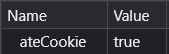
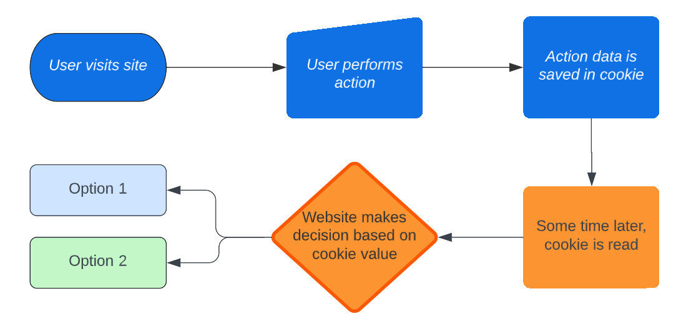
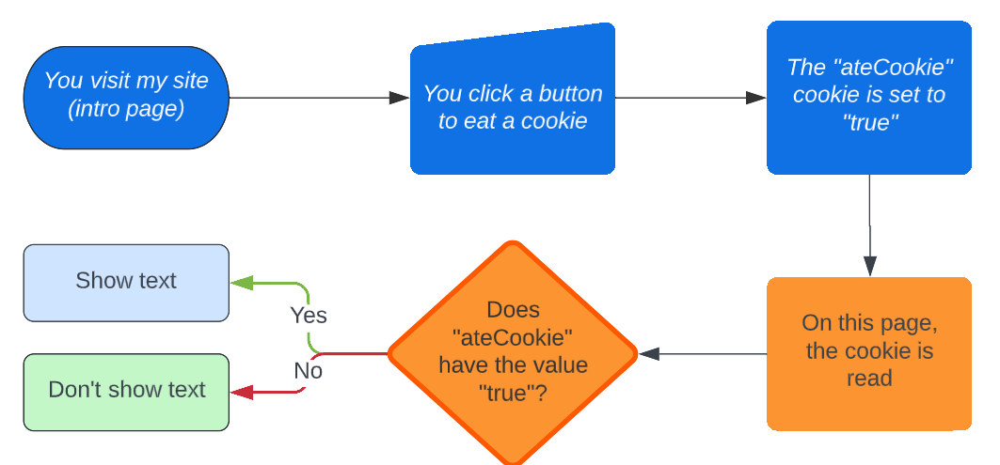

Technical Information: What do cookies really do?
Now that wasn't so bad, was it?
Cookies are name-value pairs that, on their own, do nothing.
The sole cookie from this website. If it has value 'true', then some text on this page is unhidden.
In simplest terms, a cookie is a name and a value stored in your browser's local storage. You can find them in the 'application' tab if you inspect element.
Cookies store a bit of information as text, and send that information back to the site it came from when the site wants to read it. The site can then make decisions based on the information in your cookies:
And for my website:
For example, this line of text wouldn't be visible if you hadn't clicked that button. The button below will remove the cookie. After clicking it, refresh the page and see this text go missing.
Possible cookies for user actions include:
- Setting a cookie on a browser where a user signs in
- Modifying a cookie value that stores how many free articles a user has left when they open another article
- Setting a cookie to remember that a user clicked "Do not show again" on a reminder
- Setting cookies to remember a whole variety of personalization settings when they are set (i.e. night mode)
- Setting a cookie to remember that a user clicked on a specific ad, button or link
Associated decisions might be:
- If the cookie that remembers whether a user signed in using this browser is not set, ask for email verification
- If the user has no free articles left this month and they try to open another one, prompt them with a paywall
- If the user clicked "Do not show again", don't show that reminder
- Read the user's personalization cookies to automatically set their preferences
- Display specific text, ads, etc. tailored to the user's browsing history
Of course, the best way to know what a website uses cookies for is to read its cookie policy. Google, which is by some estimates the biggest third-party cookie provider, has its own rules of how their cookies can be used.
Wait, third-party cookies? What are those?
Cookies can come from any part of a website, including embeds that come from other sites. GoogleAdServices/DoubleClick is a very popular product that websites use to personalize ads.
Cookies that come directly from the website you are visiting are called first-party cookies, and are the typically innocuous ones that deal with authentication, site preferences, and other essential functions. The "ateCookie" cookie that you would have received if you got here via the button on the home page is a first party cookie, since I created it and told your browser to store it. Other websites can't (legally) use my cookie without my permission.
Third-party cookies, on the other hand, are the kind that could 'follow' you across multiple websites since they don't originate from the website that you are visiting. They are created by a third party, hence the name, and are typically used for functions that benefit from using data that tracks all internet activity more generally instead of your activity on any specific site (i.e. recommending products or ads). They can be accessed by any website that uses ads from their creators.
So what's the big deal? Doesn't Google know everything anyway?
This sentiment just emphasizes how engrained cookies are in internet usage. Without cookies, it is not possible for GoogleAdServices or any other data collection service to know as much as they do about your internet activity.
This kind of cookie is more sophisticated than a simple "ateCookie=true" line. Sure, everyone knows about Google being able to remember what ads you click on, but they also know which ads you moused over, and which you ignored entirely. Using this information, they can build a profile of what you may or may not be interested in and effective ways to market to you. This information can then be sold to whomever can pay for it.
...but even against the biggest tech giant known to man, you aren't entirely powerless.
No, I don't mean living in a cabin in the mountains or using an adblocker; those might not work, by the way...